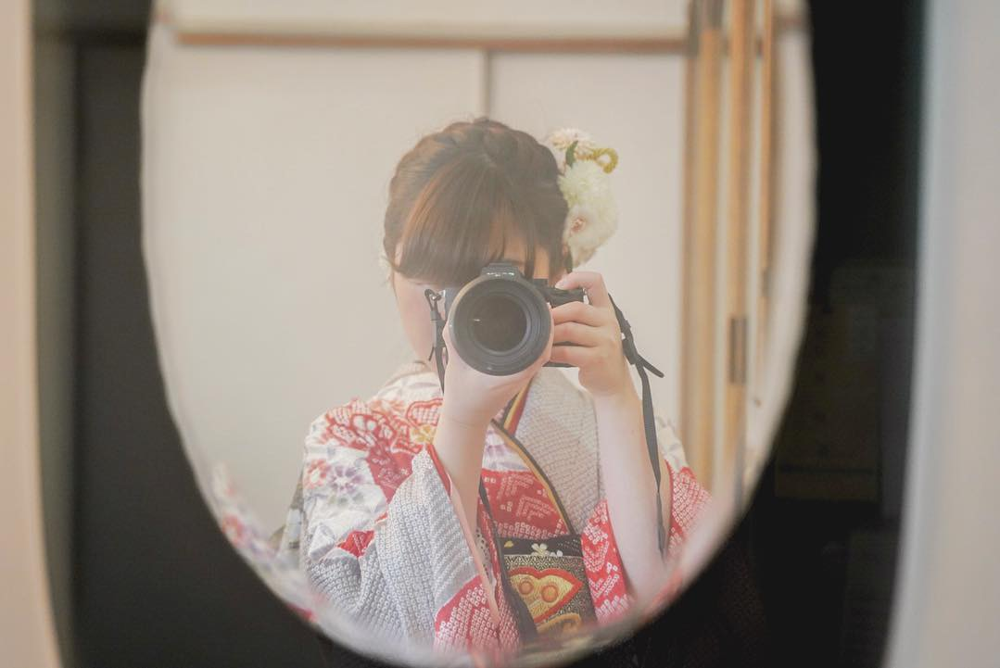
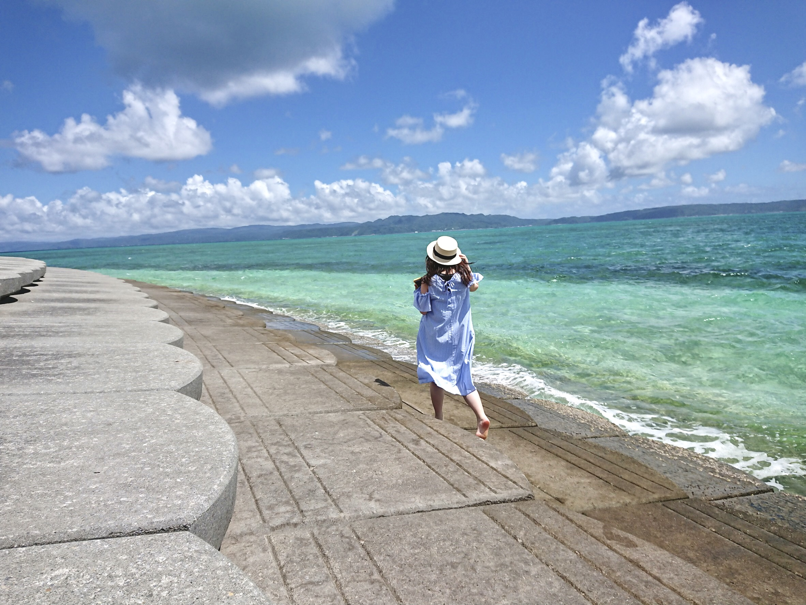

who?

たにいせいな
・甲南大学マネジメント創造学部
経営、経済、英語を勉強中
・Mentor Name せぇ
・Leasers10期映像＆Unityメンター
・WebD＆カメラ勉強中
・楽しいバカで生きていきたい
初めまして！せぇです。最近20歳になりました。今年はたくさんの人と大学生らしい最高の思い出を作っていきたいです。
↓友達申請↓
facebook
what?
Movie Edit
モーショングラフィックスを中心に動画を作成
インスタグラムで1日1動画
NOW→1日1開発
「予感」SUPER BEAVER
↓他の作品↓
Instagram
Camera
1月にカメラを買いました
実写がやりたい。
そして写真取るのが楽しすぎる。
最近は高知と東京で写真が撮れて満足
人を撮るのが好き。笑顔が好き。

Unity
スクールに入りたすぎてUnityを勉強
高知キャンプでついにキャンプunityメンターデビュー
[大阪日AスクールUnityメンター]

University?

甲南大学
・マネジメント創造学部→略して「CUBE」
・経営×経済×英語
・グローバル人材になるための教育
・社会保障や広告戦略を勉強中
・西宮北口で華やかな大学生活
[オープンキャンパス委員会]
CUBE HP
Like?
好きなもの
・ピカチュウ
・関ジャニ∞
・旅行
[47都道府県全部行きたい！]

Leaders for school
スクールで
メンターデビュー
・始めたばかりとは思えないものを作る
・おしゃれにしたい。ばえたい。
[L4Sまじで楽しみたい。楽しむぞ。]